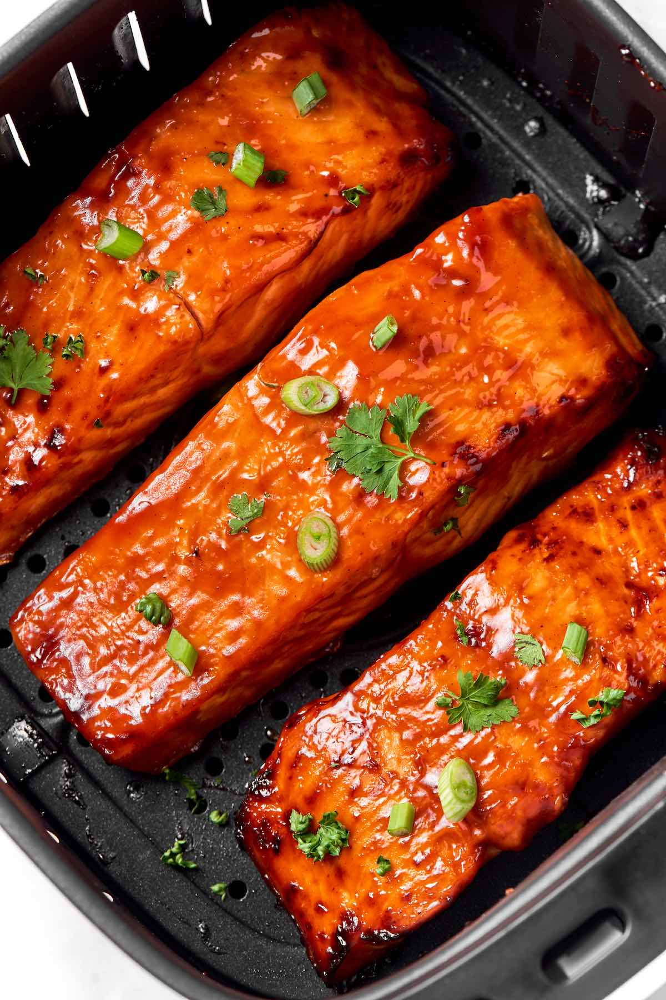

Air Fryer Salmon

Description
Air Fryer Salmon is the BEST way to cook salmon that turns out tender and flaky every single time! And this cooks in just 6 minutes.
Ingredients
- Salmon fillets
- Olive oil
- Salt and pepper
- Brown sugar the secret ingredient!
- Spices
- Sauce
Steps
- Season the salmon. Add the salmon and olive oil into a small bowl and mix. Add the salt, pepper, and spices, and rub them onto the fish. Ensure all sides of the fish are seasoned.
- Air fry the salmon. Put the seasoned salmon in the air fryer basket and air fry for 6 minutes. Remove the salmon and serve immediately.
What to serve with this?
- Steamed vegetables
- Rice
- Salad